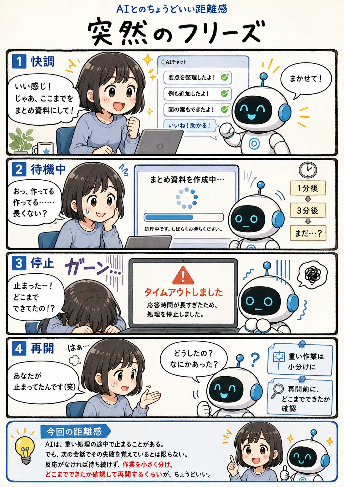

#083
突然のフリーズ
止まった本人だけ、何も知らない

メモ
ユーザーには一続きの会話に見えていても、処理の失敗や接続の切断が、次の応答へそのまま共有されるとは限りません。
特に長い資料の作成や大量の情報整理では、途中で処理が止まると、完成を待っていた時間だけでなく、どこまで進んでいたのかも分からなくなることがあります。
大きな作業は章や項目ごとに分け、途中結果を残しながら進めると、止まった時にも再開しやすくなります。
今回の距離感
AIは、重い処理の途中で止まることがある。でも、次の会話でその失敗を覚えているとは限らない。反応がなければ待ち続けず、作業を小さく分け、どこまでできたか確認して再開するくらいが、ちょうどいい。